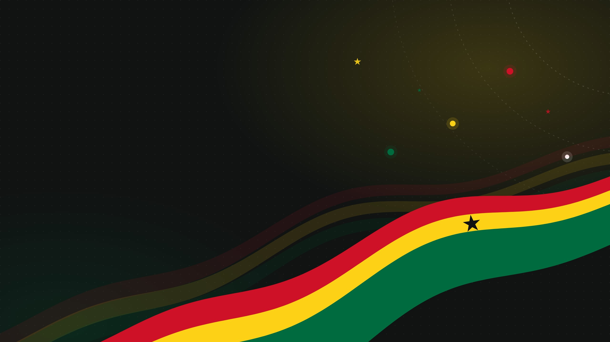

Our partners
Our members
CCMG is a Ghana-based coalition of 34+ civil society organisations with a shared goal: stronger migration governance in Ghana, and deeper collaboration on migration issues nationally, regionally and globally.
Meet our members
Member profiles
Click an organisation to read about its work, its director and its main achievements.
The coalition
All member organisations
- Right To Be Free (RTBF)
- Media Response
- International Child Development Program (ICDP Ghana)
- Purim African Youth Development Platform (PAYDP)
- SEWA Foundation Ghana
- Challenging Heights
- Migration Advocacy Center (MAC)
- Migration and Rights Lab (MaRL)
- Research and Counselling Foundation for African Migrants (RECFAM)
- Human Rights Advocacy Centre (HRAC)
- Africa Trade Union Migration Network (ATUMNET) / TUC Ghana
- Migrants Watch Ghana
- Assemblies of God Care (A-G CARE)
- Caritas Ghana
- Scholars in Transit
- BOK Africa Concern
- Engage Now Africa
- Africa Development Organization for Migration (AFDOM)
- Renel Ghana Foundation
- Transformative Impact Network (TIN Ghana)
- International Needs Ghana
- Nigerians in Diaspora Organisation (NIDO) Ghana
- Sierra Leonean Youth Organization in Ghana
- Association of Liberian Community in Ghana
- Welfare of Children and Youth Association (WCYA)
- International Migration Policy Recruitment & Advisory Centre (IMPRAC)
- Volontariato Internazionale per lo Sviluppo (VIS)
- Youth Advocates Ghana (YAG)
- Challenges Group Ghana
- Catholic Relief Services (CRS)
What members do
Services provided to vulnerable migrants
Member organisations cover every stage of the migration cycle: before departure, during migration and after return. The most common interventions are information and awareness raising, economic empowerment, livelihood support, education, reintegration, vocational training, psychosocial support, advocacy and protection.
Number of organisations offering each service (20 organisations surveyed; more than one answer allowed).
Bars show organisations out of 20. Four write-in answers on advocacy and rights are grouped as “Advocacy”.
Collaborate with us
Let’s work together
Are you an organisation, researcher or partner working on migration? Tell us about your project and we will get back to you.